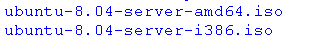

Ubuntu安装基础教程
作者：Teliute 来源：基础教程网
一、安装准备 返回目录 下一课Ubuntu(班图)是一个免费的操作系统，可以很方便地使用窗口、桌面、程序来操作电脑，下面我们来看一个练 习；
1、获得Ubuntu安装盘
1）官方下载：http://www.ubuntu.org.cn/getubuntu/download，
根据提示从上到下选择桌面版本、标准个人，点一下“请选择位置”，选一个Asia的(亚洲)，点“Start Downdoad”按钮即可；
2）国内下载：http://mirror.lupaworld.com/ubuntu/releases/8.04/，在上一级的releases里可以找到其他版本，
进入后找到上面的Desktop，根据自己的计算机类型，点击蓝色下载链接，64位CPU电脑点(AMD64)；
教育网用户：http://ftp.sjtu.edu.cn/ubuntu-cd/8.04/
其他下载地址可以在Ubuntu中文论坛里搜索一下：http://forum.ubuntu.org.cn/viewforum.php?f=77
3）下载以后得到一个ISO镜像文件，如果不放心可以用md5工具检查对比一下；
4）如果有刻录机，可以把这个镜像文件刻成光盘，用质量好些的光盘，选择低倍速刻录；
2、版本介绍
1）根据CPU的不同，可以分为32位和64位两种版本，看一下自己电脑的配置单或说明书，可以知道自己机子的cpu是哪一种，也可以问问电脑商家；
2）根据安装方式的不同，可以分为桌面安装版和文字安装版，
桌面版(desktop)可以先进入Ubuntu桌面，然后用鼠标和窗口安装，也叫Live CD光盘，安装比较方便，
文字安装版叫alternate，安装的时候主要用键盘操作，兼容性比较好；
一般用desktop桌面版安装，如果不成功再试试alternate版；
3）根据安装用途的不同，可以分出server版，主要用在服务器上，内核时钟频率较高，没有桌面版，自动安装了一些服务器软件包；
另外有一个Edubuntu版，里面的教学软件非常多，在学校使用很方便；
4）根据桌面环境的不同，又分为Ubuntu、Kubuntu、Xubuntu，他们所采用的桌面和窗口不一样，
各个版本的特点可以参看：http://www.ubuntu.org.cn/products/whatisubuntu
5）版本里的8.04是指发布日期，也就是2008年4月发布，版本后面的LTS是“长期支持”，桌面版有3年、服务器版有5年的支持，
普通版本有18个月的更新升级支持，到期后仍然可以使用，只是官方不再提供更新；
本节学习了下载Ubuntu镜像文件和版本的知识，如果你成功地完成了练习，请继续学习下一课内容；本教程由86团学校TeliuTe制作|著作权所有
基础教程网：http://teliute.org/
美丽的校园……
转载和引用本站内容，请保留版权信息和本站链接。